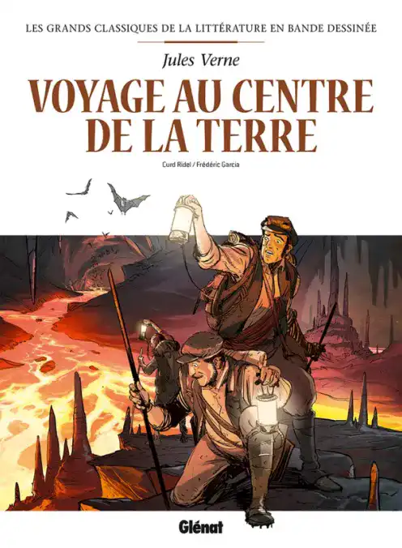

Voyage au centre de la Terre
Un auteur pas comme les autres
Voyage au centre de la Terre est un roman de science-fiction écrit par l'auteur français Jules Verne en 1864. L'histoire suit le personnage fictif de l'étudiant Otto Lidenbrock lors d'un voyage au centre de la Terre. En cours de route, il apprend l'histoire naturelle et surnaturelle de notre planète. Certains lecteurs ont comparé Journey to the Center of the Earth à un jeu vidéo puisqu'il transporte ses lecteurs dans un autre monde.
Un voyage International
Pour aider ses lecteurs à imaginer ce voyage, Verne a utilisé la géographie pour leur donner un sentiment d'appartenance. Il a basé le décor de ses personnages sur la connaissance géographique de ses lecteurs des cultures anciennes de l'Europe. Par exemple, il a situé son roman en Allemagne puisque c'est là que de nombreux érudits allemands ont étudié la Grèce antique à cette époque. Il a également basé la destination de ses personnages sur une caractéristique géologique connue sous le nom de vallée du Rift du Rhin. Il s'agit d'une énorme formation géologique qui traverse des parties du nord-est de la France et des parties de l'ouest de l'Allemagne, s'étendant sur plus de 100 miles de long et plus de 20 miles de large. En ancrant le voyage de ses personnages dans de telles caractéristiques géographiques reconnaissables, Verne a permis à ses lecteurs de suivre mentalement facilement les voyages de leur personnage.
Une métaphore réflective
Outre son cadre et ses dialogues inventifs, le Voyage au centre de la Terre de Jules Verne se distingue par ses représentations réalistes de l'histoire naturelle et de la mythologie. Il encourage les membres du public à réfléchir à la géologie en plaçant ses événements dans des caractéristiques géographiques reconnaissables et des personnalités familières. De plus, certaines métaphores précédemment associées à la science-fiction sont renversées par la pensée intelligente de Jules Verne, permettant aux gens de découvrir à la fois à l'intérieur et à l'extérieur du corps central de la Terre.